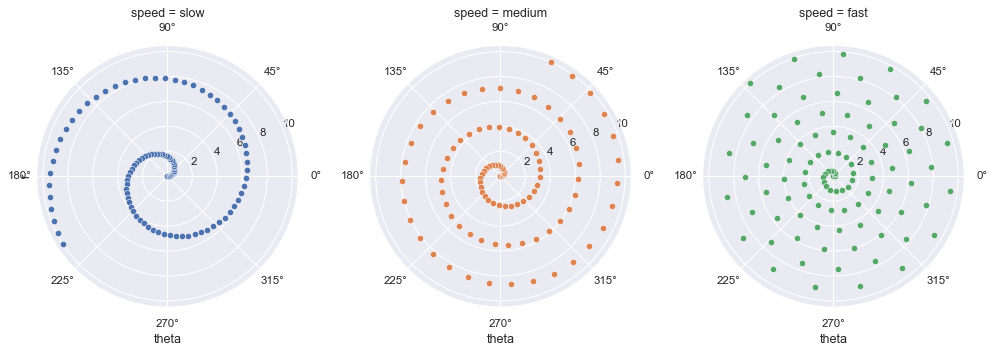

FacetGrid with custom projection¶
seaborn components used: set_theme(), FacetGrid
import numpy as np
import pandas as pd
import seaborn as sns
sns.set_theme()
# Generate an example radial datast
r = np.linspace(0, 10, num=100)
df = pd.DataFrame({'r': r, 'slow': r, 'medium': 2 * r, 'fast': 4 * r})
# Convert the dataframe to long-form or "tidy" format
df = pd.melt(df, id_vars=['r'], var_name='speed', value_name='theta')
# Set up a grid of axes with a polar projection
g = sns.FacetGrid(df, col="speed", hue="speed",
subplot_kws=dict(projection='polar'), height=4.5,
sharex=False, sharey=False, despine=False)
# Draw a scatterplot onto each axes in the grid
g.map(sns.scatterplot, "theta", "r")